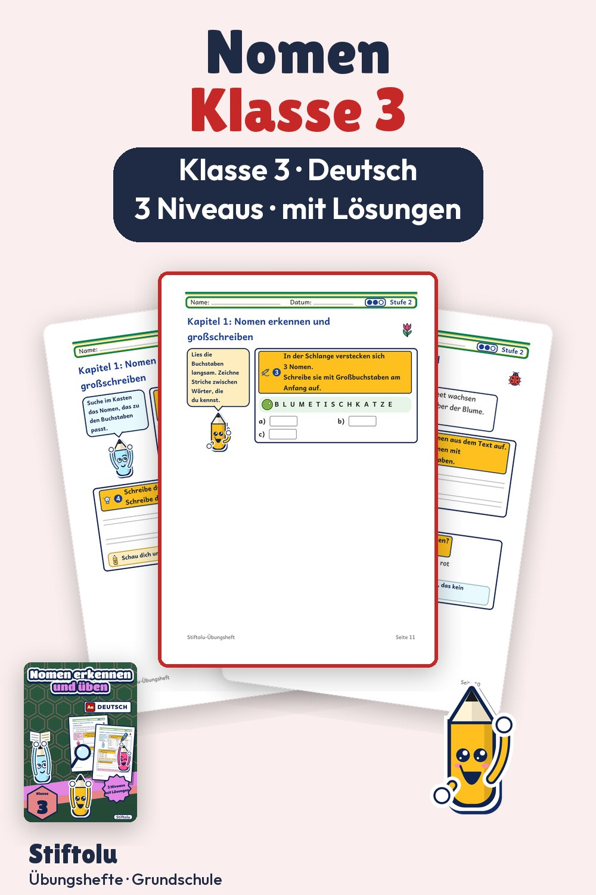

Werbung · Übungsheft von Stiftolu
Nomen erkennen und richtig schreiben – Wortarten für Klasse 3

Warum heißt es die Haustür? Weil das letzte Nomen den Artikel bestimmt, eine von mehreren Regeln in diesem Übungsheft für Klasse 3. Dazu gehören Großschreibung, Artikel und Mehrzahl mit Umlaut. Der Umfang: 50 Seiten mit Lösungen, erhältlich auf eduki.